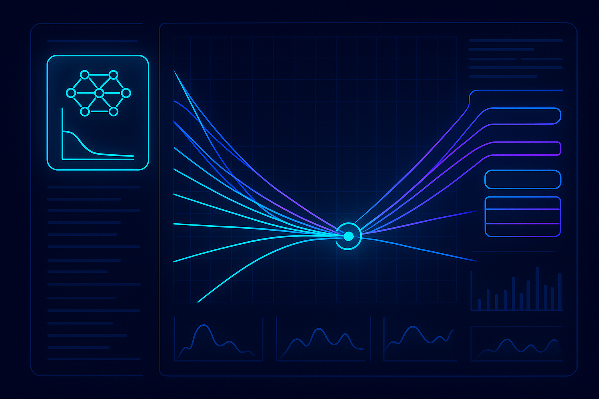
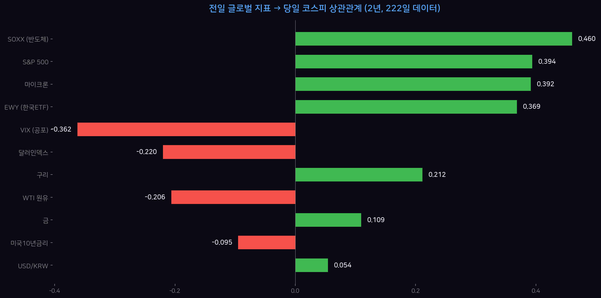
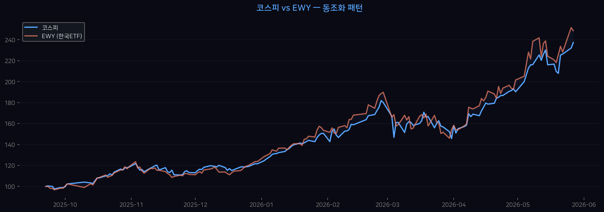
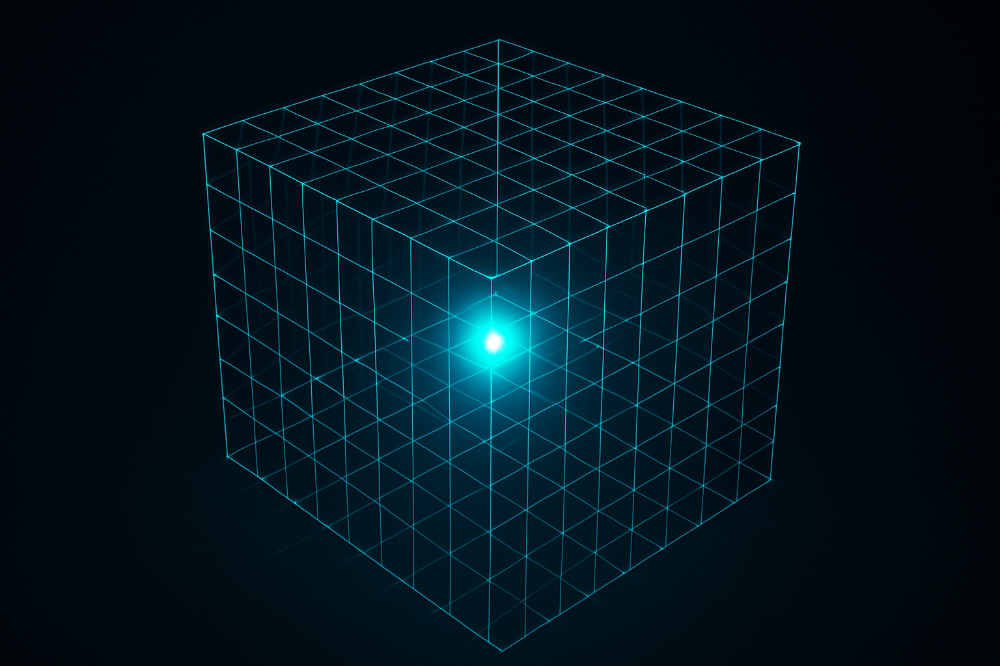
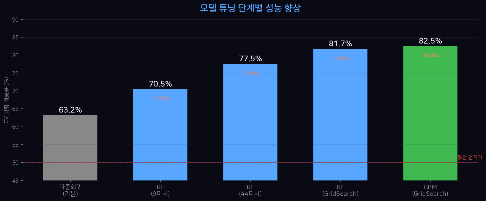
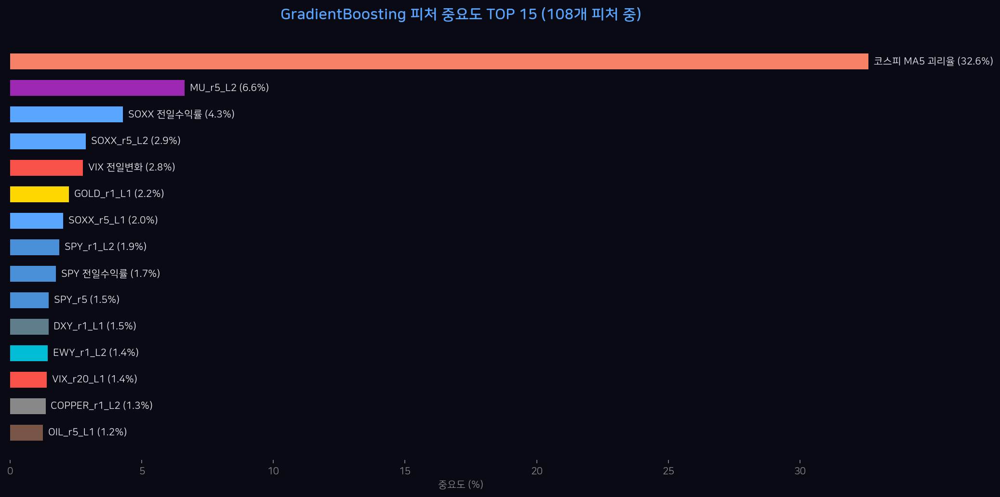
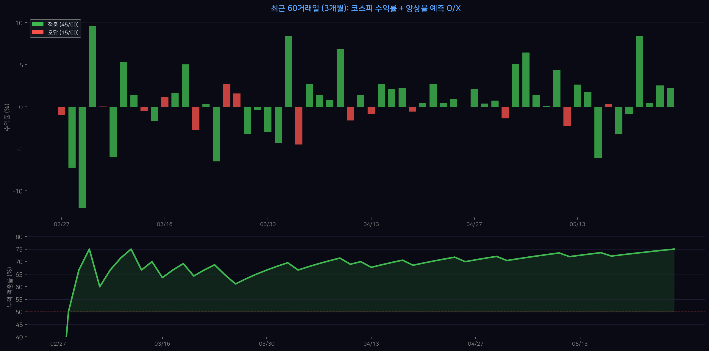
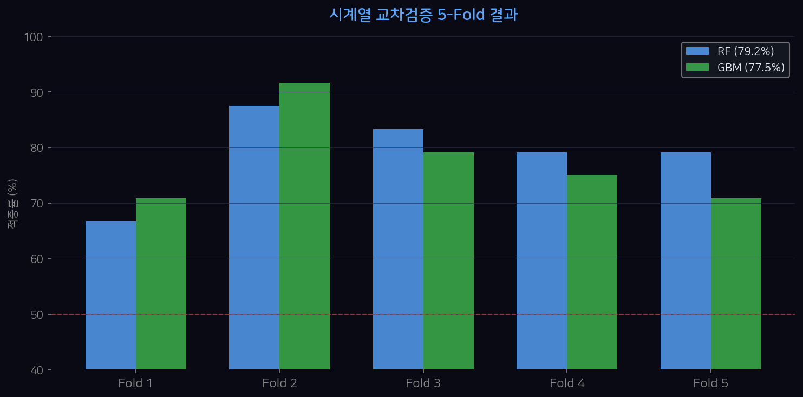
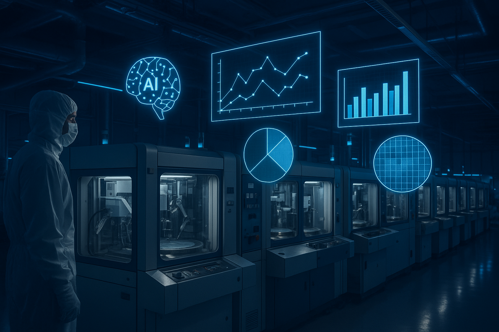

AI에게 시키면 코스피도 예측한다
삼성디스플레이 중소형품질팀 · 최낙초
2026.05.29
⏱️ 보통 2~3일
⏱️ 30분
👤 사람 (텔레그램)
🤖 AI (자동 실행)
👤 사람
🤖 AI — 30분 안에 완료한 작업 목록
전일 미국 데이터 → 당일 코스피 수익률 (148일 실측 데이터)


6개월간 두 지수가 거의 동일하게 움직인다 → EWY 전일 수익률이 코스피 예측에 유효한 근거
| 모델 | 테스트 (30일) | CV (5-fold) | 판정 |
|---|---|---|---|
| 다중회귀 | 50.0% | 63.2% ±12% | 불안정 |
| RF 분류 | 63.3% | 70.5% ±9.2% | 채택 |
| RF 회귀 | 60.0% | 66.3% ±9.8% | 보통 |
→ 이 한 마디가 Part 2를 시작시켰다

70.5% → 82.5% — 프롬프트 한 줄의 마법
👤 사람
🤖 AI가 스스로 판단한 튜닝 전략:
모든 파라미터 조합을 시도해서 최적을 찾는 "무차별 대입 탐색"
🖥️ t3.micro (1vCPU, 1GB RAM)
900번 학습 → 타임아웃!
🤖 AI의 판단:
"그리드 줄여서 빨리 한번 돌리고,
전체 그리드는 백그라운드로"
→ 축소 (36조합) + 전체 (180조합) 병렬 전략
| 피처 | 설명 |
|---|---|
| lag2, lag3 | 2~3일 전 데이터 |
| MA5 괴리율 | 5일 이평 대비 위치 🏆 |
| RSI (14일) | 과매수/과매도 |
| 변동성 5일 | 최근 변동 크기 |
| 요일 더미 | 월~금 효과 |
기본 피처 (9개)
70.5%
⬇️
확장 피처 (44개)
77.5%
+7.0%p 개선


💡 "코스피가 5일 이동평균선 위에 있으면 내일도 오른다" — 이 단순한 모멘텀 패턴이 전체 예측력의 41%를 설명한다. 복잡한 피처보다 단순한 추세가 강력.
| 마이크론 | +19.3% 🔥 |
| EWY | +10.2% |
| SOXX | +6.1% |
| SPY | +0.7% |
| VIX | 17.0 (안정) |
GradientBoosting
상승 99.6%
RandomForest
상승 87.0%
🎯 앙상블: 상승 (2/2, 강)

초록=적중, 빨강=오답 | 아래: 누적 적중률이 50%(랜덤)을 상회하면 모델이 유효
30분
프롬프트 3개 · 코드 0줄 작성 · ML 모델 5개 비교 · CV 검증 완료

⚠️ 흔한 실수: random shuffle로 80% 나왔다고 좋아하면 안 됨 — 미래 데이터 누출.
TimeSeriesSplit: 항상 과거→미래 방향으로만 학습. 이게 진짜 실력.
💡 그래도 의미 있는 이유: "어떤 변수가 어떤 방향으로 영향을 주는지" 정량적으로 아는 것 자체가 의사결정 품질을 높인다. 모델이 100% 맞아야만 가치 있는 건 아니다.

입력: 미국 주가, VIX, 환율
타겟: 코스피 등락
모델: RF + GBM
검증: TimeSeriesSplit
결과: 82.5%
입력: CVD 온도, 가스비, 챔버 호기
타겟: Vth shift, STIS 등급
모델: RF + GBM (동일)
검증: K-Fold
결과: ?? — 해보자!
한 명보다 세 명이 낫다
📐
선형 관계를 잡음
상승 +4.12%
🌲
비선형 패턴 발견
상승 87.0%
🚀
오차를 반복 수정
상승 99.6%
다수결 (2/3 이상 동의) → 최종 판단
오늘: 3/3 동의 = 강한 상승 신호
"이 CSV 데이터에서 [타겟]을 예측하는 랜덤포레스트 만들어줘. 교차검증하고 피처 중요도 보여줘."
"적중률이 낮아. 피처 추가하고 하이퍼파라미터 튜닝해봐. GradientBoosting도 비교해."
"최적 모델로 새 데이터 예측해줘. 결과를 해석하고 한계도 알려줘."
도구: Claude Code / ChatGPT / Google Colab 아무거나
데이터: CSV 파일 하나 + 위 프롬프트 3개
1️⃣ 프롬프트가 코드를 대체한다 — 문법 몰라도 ML 가능
2️⃣ 피처 엔지니어링이 절반 — 9개→44개로 +7%p 상승
3️⃣ GridSearch가 나머지 절반 — 자동 튜닝으로 +5%p 추가
4️⃣ 시계열은 TimeSeriesSplit — 미래 누출하면 가짜 정확도
5️⃣ 한계를 아는 게 진짜 실력 — 82.5%도 완벽하진 않다
"코드를 짜는 능력이 아니라
질문을 던지는 능력이
머신러닝을 가능하게 한다"
📊 코드: github.com/waterfirst
📧 nakcho.choi@gmail.com
삼성디스플레이 중소형품질팀 · 최낙초